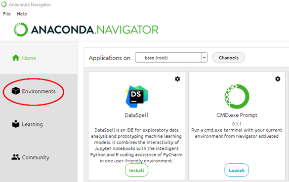
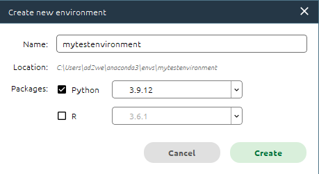
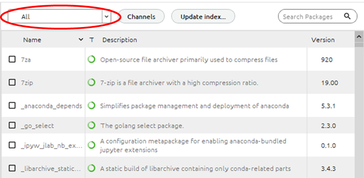
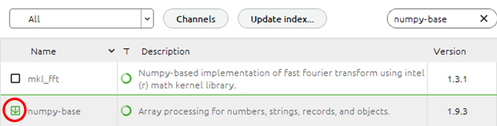
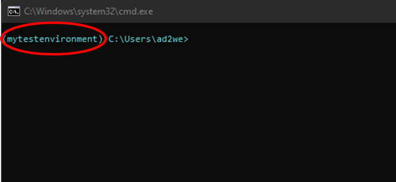
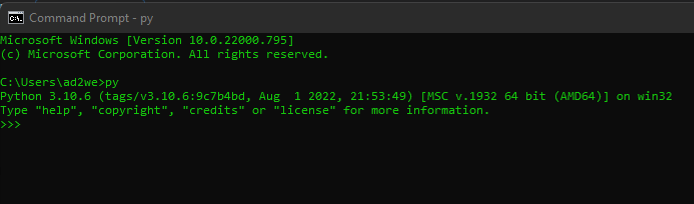
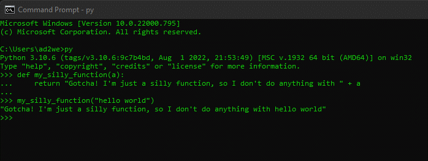
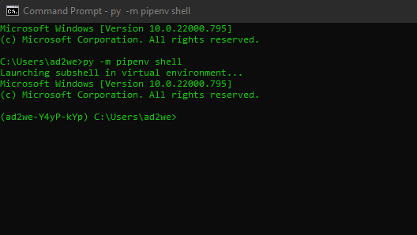
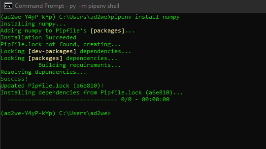
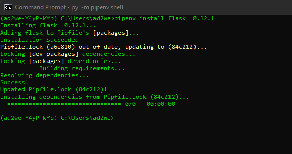

Appendix
Contents
Appendix#
Welcome to the appendix! Here you’ll find instructions/guides to various Python techniques, tasks, and operations. If you have any suggestions as to what you’d like a section to be written about, please let us know! ad2weng@stanford.edu would be happy to receive your feedback!
Appendix A: Virtual environments in Python#
When operating in Python, you’ll often hear/read the advice that you should set up a “virtual environment” for each project you are working on. What exactly is a virtual environment, and why do you need one for every project?
From Python’s official documentation:
A virtual environment is a Python environment such that the Python interpreter, libraries, and scripts installed into it are isolated from those installed in other virtual environments, and (by default) any libraries installed in a “system” Python; i.e., the version of Python which is installed as part of your operating system.
Put another way, activating your project in a virtual environment allows it to become it’s own self-contained application. A few advantages of doing this include:
Allows you to download packages into your project without administrator privileges/status.
Compartmentalizes your project materials for easy sharing and replication.
Avoids inter-project conflicts regarding versions and dependencies for packages.
That last point can become especially relevant as you work on multiple projects in Python, as one critical version/dependency for one project can cause your other projects to stop working. And, the process of uninstalling packages and/or switching versions for projects is tedious and time-consuming.
With the benefits demonstrated, how exactly do we go about setting up a virtual environment? So glad you asked!
Appendix A.1: Virtual environments in Anaconda#
Anaconda is the preferred distribution for local Python installs, with many functionalities presented in a user-friendly interface and offering a suite of applications to aid in data science projects. You can download it here.
A.1.1: Setting up a virtual environment#
Once you’ve downloaded Anaconda, you can set up a virtual environment by:
Open Anaconda Navigator on your computer.
On the left-hand side of the Navigator window, find and click on the button that say ‘Environments’:

3. In the 'Environments' page, go to the bottom-left of the page and click the button that says 'Create'.
When you do so, you’ll be prompted by a pop-up window to provide a name for your new virtual environment. The location for the virutal environment will be shown to you, and you can install a specific version of Python and/or R:

Click the ‘Create’ button in the pop-up window, and wait for the virtual environment to finish being created.
A.1.2: Activating your virtual environment#
Now you’re ready to use your virtual environment! To work in this environment, anytime you open Anaconda:
Navigate to the ‘Environments’ page;
Find the environment you want to use; and
Click on it!
A.1.3: Adding packages to your virutal environment#
To install packages in this virtual environment, either:
Stay on the ‘Environments’ page, and on the right-hand side of the page:
Change the field dictating displayed packages to ‘Not installed’ or ‘All’:

* Go to the 'Search Packages' field and type in the name(s) of the package you want to install;
* If your package is available, click the open checkbox to the left of the package name:

* Once you've selected all of the packages of interest, click the 'Apply' button in the bottom right-hand corner of the page to install them.
Go to the ‘Home’ page, and (install and then) open the ‘CMD.exe Prompt’ program:
In your command prompt window, you’ll see that you’re operating in your previously-selected virtual environment:

* In this window, type ``` pip install [name of package] ``` for each package you want to install/weren't able to install in the 'Environments' page.
Appendix A.2: Virtual environments in Command Window#
If you prefer to run Python in a command window-type interface, you can still use virtual environments! For this purpose, I recommend the user-friendly pipenv package (which utilizes the pip and virtualenv packages, but handles most of the nitty-gritty details so you don’t have to).
Let’s take a look at how to use it:
A.2.1: Installation prerequisites#
To use the pipenv package, there’s some other things we need to take care of first:
Make sure you have Python installed on your machine. If you don’t, you should download the latest version before proceeding.
Open a command window:
On Windows devices, you can access this interface through the ‘Command Prompt’ program or the ‘Windows Powershell’ program.
On Apple devices, a similar interface is avaialbe through the ‘Terminal’ application.
Make sure Python is installed and recognized by your device by typing the
pycommand in the command window. You should be greeted by a message which looks something like this:

which displays the current version of Python running and some other information.
* Running Python from a command window still lets you do all the wonderful Pythonic things you might want to! Writing functions, running scripts, etc. For example:

* Most people treat Python in the command window as a lightweight test IDE/calculator. Feel free to play around with it!
If you see a similar “version (misc. info) [misc. info]” message, your Python installation is ready to go! Please reach out for help troubleshooting if you don’t.
A.2.2: Installing pipenv#
Now that you’ve installed Python and can access it from a command window, you’re ready to install pipenv.
First, install the
pippackage to unpack thepipenvpackage.If you’re not sure as to whether you’ve installed
pipor not, in your any command window Python instance, type and enterimport pip.If no errors rise or nothing happens, you’re good to go!
Exit the Python instance you’re currently running in your command window by executing “exit() + Enter” or “Ctrl + Z + Enter.”
Install
pipenvby typing and entering:py -m pip install pipenv.
That’s it! pipenv has been installed and you’re ready to set up virtual environments.
A.2.3: Using pipenv#
pipenv allows you to control virutal environment creation and package installation and versioning all from the same interface. Let’s go through some of the most common operations in pipenv for virtual environment management:
Navigate to your project directory:
pipenvkeeps all of your virutal environments separate by hashing the path of your current working directory. So, before you create a new virtual environment, be sure to navigate to the directory where you want all of the materials for your current project/workflow to be stored.After you’ve created your virtual environment for that project (by following the rest of the guide below), it will automatically be re-initialized anytime you navigate to that same working directory and open a
pipenvshell in it—read on for more about that!
Creating a virtual environment:
To create a new virtual environment, simply enter the command
py -m pipenv shell. This will instantiate a new virtual environment (and a shell/command window in that environment) if one doesn’t already exist. You should see a screen that looks like this:

* In the sub-shell, you will be able to see the name of the new virtual environment prefixed before the working directory path. In the image above, my new virtual environment is called ```ad2we-Y4yP-kYp```.
* Then, be sure to install ```pipenv``` in your sub-shell (confusing, I know, but your virtual environment is sealed off from your local machine - it doens't know you have ```pipenv``` installed upstairs!) Executing ```py -m install pipenv``` in your subshell will do the trick.
Installing packages:
Now in your virtual environment sub-shell, installing packages with
pipenvis just like installing packages withpip:If you don’t need a particular version of a package, just type
pipenv install <name of package>:

* If you need a particular version of a package, you can enter ```pipenv install <name of package>==<version number>```:

* Uninstalling packages can be done by executing ```pipenv uninstall <name of package>```.
Locking the environment:
In your virutal environment shell, you can run scripts, write functions, edit files, etc. as usual. Once you’ve completed your workflow, you can lock the versions of the different packages you have installed to ensure that you and others can always replicate your work without having to worry about versioning issues.
Run the command
pipenv lock— this will generate/update a file calledPipfile.lockwhich you should never need to edit manually. This file lists all the package versions, dependencies, and other computer-useful information used at the exact moment your ran thepipenv lockcommand.Anytime after running
pipenv lock, if you’d like to restore this locked environment (say, when opening a new command window and resuming work on a project), you can run the command:pipenv install --ignore-pipfilewhich bypasses the Pipfile—a file that contains only general information about required packages—to re-initalize the exact environment present when your previously locked development in this project directory.